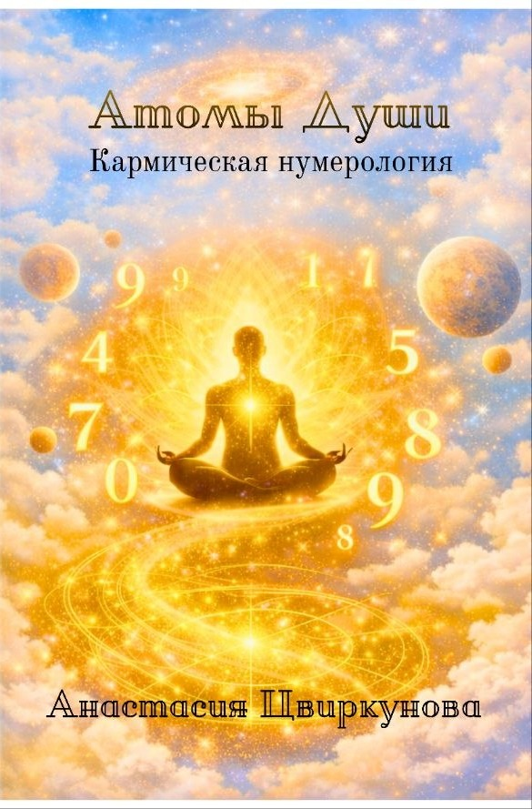
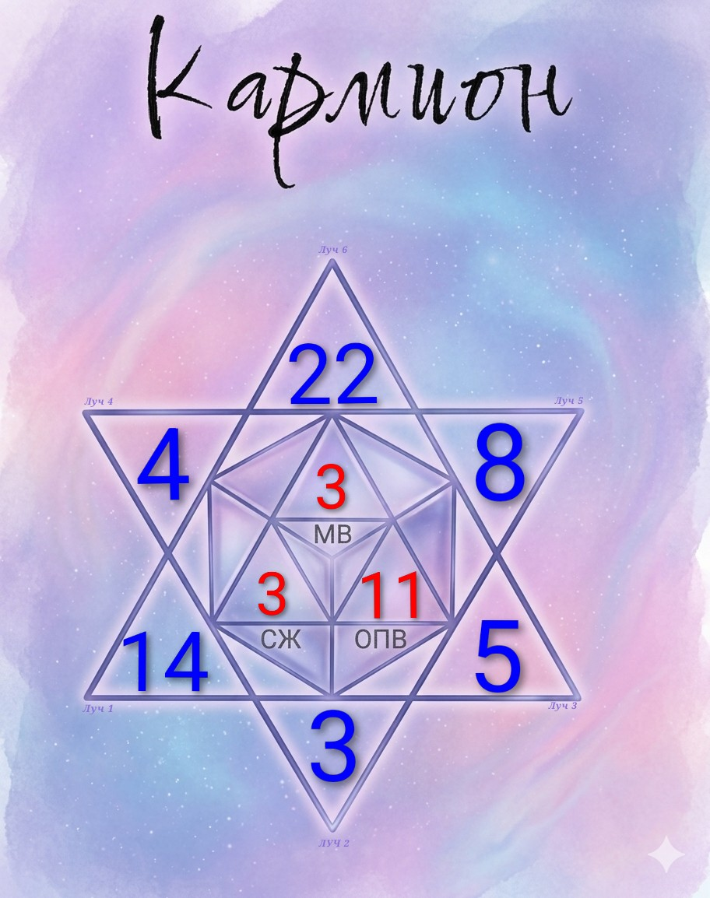

Книга Анастасии Цвиркуновой (Щетининой)
О том, как читать свою душу через числа: родовые сценарии, кармические уроки прошлых воплощений и то, что определяет судьбу задолго до рождения.

Принято считать карму карающей — но она справедлива и щедро вознаграждает тех, кто следует её правилам. Книга простым языком объясняет, как читать родовую линию, месяц воплощения, кармические индикаторы прошлых жизней и обратку кармы по годам — на примерах и с формулами расчёта.
«Кармион» объединяет классическую, пифагорейскую и ведическую нумерологию, а также нумерологию Таро — в единую матрицу из 22 кармических энергий. Цель системы — не описать характер, а дать инструмент: показать, в чём человек сейчас проживает свою энергию в минус, и куда её направить, чтобы жизнь начала налаживаться.

По месяцу рождения — кармическая программа, унаследованная от рода.
Сожаление и ошибка прошлого воплощения — что тянется из прошлой жизни.
Число Сознания, Характера, Судьбы, Жизненного Пути, Ядро Силы, Глобальный Вектор.
Все девять чисел складываются в звезду «Кармион» — шестиконечную звезду с тремя кармическими значениями внутри. Рассчитать свою звезду можно в калькуляторе.
Курс проведёт от первого расчёта до полной консультации: как считать всю матрицу и что означает каждое конкретное число.
Я создала «Кармион» — авторскую систему кармической нумерологии, объединяющую классическую, пифагорейскую и ведическую нумерологию, а также нумерологию Таро.
Провожу личные консультации, обучаю методике учеников и объясняю карму простым языком — без мистики ради мистики, только то, с чем реально можно работать.
«Создавая „Кармион“, я хотела объединить расчёт, структуру и толкование в единую систему — точную, воспроизводимую и живую».
Скоро здесь появится больше отзывов.
День рождения ребёнка показывает, какая родовая душа воплотилась в нём снова — и какую задачу рода он несёт с самого детства. Найдите число дня рождения в списке ниже.
Сильные, мудрые предки возвращаются в эти даты, когда роду вновь нужен человек, способный удержать его опору. С детства не любят, когда ими руководят, рано начинают принимать решения самостоятельно. Родители часто воспринимают их как упрямых или холодных, пытаясь сломить характер — из-за давления силы становится некуда девать, и она начинает разрушать изнутри.
Возвращаются мужчины рода, которые отвечали за его силу и выживание. Даже если рождается девочка, она несёт мужской родовой стержень. Такие люди с трудом принимают помощь, рано взрослеют и живут с ощущением, что права на слабость у них нет.
Это были отверженные дети, изгнанные родственники, люди, о которых запрещалось говорить. Родившиеся в эти дни с детства чувствуют себя чужими в своей семье, выбирают другой путь и постоянно доказывают своё право быть собой.
С детства тонко чувствуют людей, обладают сильной интуицией. Эта чувствительность становится испытанием: быстро устают от людей, бессознательно берут на себя чужую боль. Если отвергают свой дар — жизнь подталкивает к ситуациям, где интуицию невозможно игнорировать.
Души, впервые попавшие в родовую систему — не входили в её прежнюю иерархию. Часто чувствуют себя не такими, как все, даже в любящей семье. Именно на них чаще всего заканчиваются многолетние родовые сценарии: разводы, бедность, зависимости, страх проявить себя.
Возвращаются женщины, отвечавшие за продолжение рода. Рождаются с врождённым чувством ответственности за чужие эмоции, особенно привязаны к маме. Главная кармическая задача — не повторить судьбу женщин своего рода, которые жили ради других.
Души, которым не удалось воплотиться с первого раза. С детства испытывают необъяснимое чувство, будто им приходится заслуживать право жить и занимать своё место. Боятся потерять отношения, соглашаются там, где их недооценивают.
Такие дети приходят именно к своему отцу — разделить с ним карму, если его род согрешил. Особенно тяжело тем, у кого по отцовской линии были разводы, измены, зависимости. Во взрослой жизни сценарий продолжается через начальников и мужчин, проверяющих их на прочность.
Возвращаются, чтобы разрешить нерешённый конфликт с женской ветвью семьи. Связь с матерью редко бывает простой. Со временем сценарий переносится на всех женщин — подруг, коллег, свекровей. Род возвращает конфликт, пока женская линия не будет исцелена.
Возвращается почти сразу после ухода, если роду нужно сохранить определённый опыт. Такие дети с раннего возраста необычно зрелые и спокойные, но несут незавершённые эмоции прошлого воплощения. Им очень трудно что-то отпустить — даже переезд или увольнение ощущается как предательство памяти семьи.
Вводный семинар курса — видео и методичка в закрытой группе телеграм. Считаете свою звезду вместе со мной, без предварительной подготовки.
Вступить в группуПолное обучение методике: расшифровка каждого числа, связки векторов и прогностика. Для тех, кто хочет считать самостоятельно.
Узнать большеРассчитайте свою полную звезду «Кармион» онлайн — все шесть Лучей и кармические индикаторы с расшифровкой.
Узнать больше